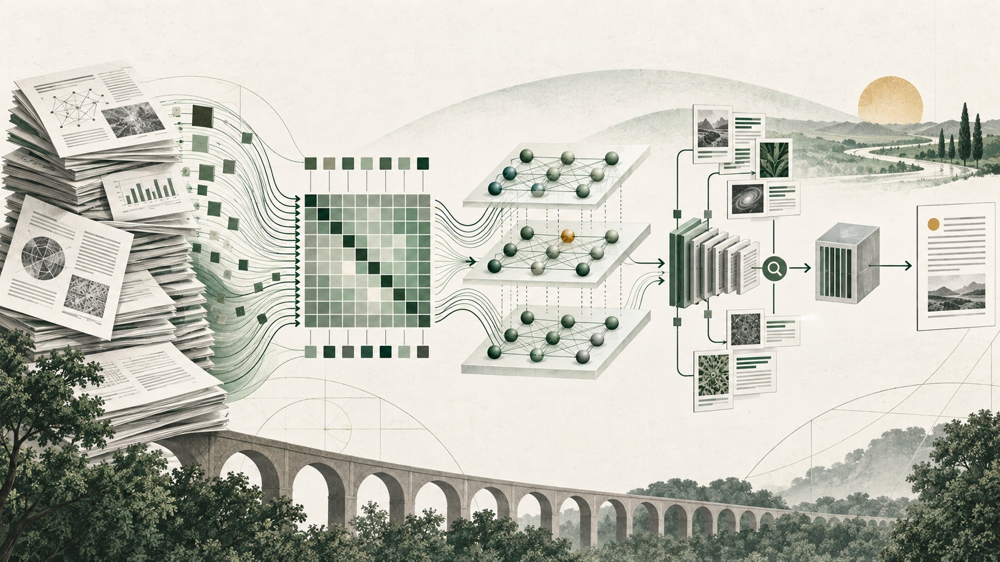

01
2017 · Foundation · 14 min
Attention Is All You Need
Introduced the Transformer: an encoder-decoder architecture built around attention rather than recurrence or convolution, enabling much more parallel sequence training.
37 topics · 6 learning stages
Start with the Transformer, follow the forces that scaled language models, then study alignment, efficient training, inference systems, retrieval, reasoning, and agents. Each guide separates the paper's evidence from later engineering practice.
0 of 37 complete

Showing 37 papers
The architecture, pretraining objectives, positional methods, and attention-head designs underneath modern language models.
2017 · Foundation · 14 min
Introduced the Transformer: an encoder-decoder architecture built around attention rather than recurrence or convolution, enabling much more parallel sequence training.
2018 · Foundation · 12 min
Showed that deeply bidirectional Transformer encoders can be pretrained with masked tokens and then fine-tuned with a small task head for many language-understanding benchmarks.
2018 · Foundation · 11 min
Established generative autoregressive pretraining followed by supervised fine-tuning as a general route to transferable language understanding.
2019 · Foundation · 12 min
Demonstrated that a larger language model trained on diverse web text can perform several tasks from natural-language context without task-specific gradient updates.
2021 · Intermediate · 12 min
Encoded token position by rotating query and key vectors so their dot product naturally contains relative-position information.
2021 · Intermediate · 10 min
Added head-specific linear distance penalties directly to attention scores, enabling models trained on shorter sequences to extrapolate to longer inputs.
2019 · Advanced · 11 min
Reduced autoregressive decoding bandwidth by sharing one key head and one value head across all query heads.
2023 · Advanced · 11 min
Introduced an intermediate attention design that shares each key/value head across a group of query heads, balancing MHA quality with MQA serving efficiency.
How model capability changes with compute, parameters, data mixtures, and large open research releases.
2020 · Intermediate · 12 min
Measured smooth power-law relationships between language-model loss and model size, dataset size, and training compute, turning scale into a quantitative planning variable.
2020 · Intermediate · 13 min
Showed that a 175-billion-parameter autoregressive model could perform many tasks from instructions and examples in context without gradient updates.
2020 · Intermediate · 12 min
Released an 800GB English text mixture from 22 documented components to support large-scale language-model training and evaluation research.
2022 · Intermediate · 13 min
Re-estimated compute-optimal scaling and showed that many large language models were undertrained: model parameters and training tokens should grow roughly together.
2022 · Intermediate · 12 min
Scaled a dense 540B-parameter decoder model across 6,144 TPU v4 chips with Pathways and documented broad few-shot gains plus discontinuous improvements on some tasks.
2022 · Intermediate · 11 min
Released a suite of decoder-only models up to 175B parameters with weights, code, and a detailed training log to broaden access to large-model research.
2022 · Intermediate · 12 min
Built and released a 176B-parameter multilingual model through a large international collaboration, pairing technical scale with explicit governance and documentation.
2023 · Intermediate · 12 min
Showed that smaller models trained on far more tokens can outperform much larger models on many benchmarks while using publicly available data sources.
Methods that turn a next-token predictor into a system that follows instructions and reflects stated preferences.
2022 · Intermediate · 13 min
Combined supervised demonstrations, a learned human-preference reward model, and PPO to make language models follow user instructions more helpfully and safely.
2022 · Intermediate · 13 min
Used written principles plus model-generated critiques, revisions, and preference labels to train a less harmful assistant with substantially less direct harmfulness labeling.
2022 · Intermediate · 11 min
Bootstrapped instruction-following data by asking a language model to generate new tasks, inputs, and outputs, then filtering and fine-tuning on the synthetic collection.
2023 · Advanced · 13 min
Derived a direct classification loss for preference alignment, avoiding an explicit reward model and online reinforcement-learning loop.
2024 · Advanced · 11 min
Combined supervised instruction tuning and preference separation in one reference-free objective using an odds-ratio penalty.
2024 · Advanced · 14 min
Introduced Group Relative Policy Optimization in DeepSeekMath, using rewards normalized across sampled answer groups to train reasoning without a separate value model.
Parameter-efficient tuning, sparse experts, and optimizer design for reducing the cost of changing or training models.
2021 · Intermediate · 11 min
Made large-model adaptation cheaper by freezing pretrained weights and learning small low-rank update matrices inside selected linear layers.
2023 · Advanced · 13 min
Enabled high-quality fine-tuning of very large models on a single GPU by backpropagating through a frozen 4-bit quantized base into LoRA adapters.
2021 · Advanced · 14 min
Simplified sparse mixture-of-experts routing to one expert per token, scaling model capacity to a trillion parameters while keeping per-token computation comparatively bounded.
2024 · Advanced · 13 min
Improved MoE specialization through finer-grained routed experts plus always-active shared experts that capture common knowledge.
2025 · Advanced · 14 min
Scaled the Muon matrix optimizer to language-model training by orthogonalizing momentum updates, adding weight decay, and calibrating update scale.
Algorithms and serving systems that move less memory, reuse work, and serve more requests per accelerator.
2022 · Advanced · 14 min
Reordered exact attention into SRAM-sized tiles, avoiding materialization of the full score matrix in high-bandwidth memory and improving speed plus memory usage.
2023 · Advanced · 12 min
Improved FlashAttention’s GPU utilization by reducing non-matrix work and repartitioning attention across thread blocks and warps.
2022 · Advanced · 14 min
Accelerated exact autoregressive sampling by letting a cheap draft propose several tokens and having the target model verify them in parallel without changing its output distribution.
2023 · Advanced · 15 min
Applied virtual-memory-style paging to KV cache and combined it with continuous batching, greatly improving serving throughput under variable request lengths.
2023 · Advanced · 17 min
Synthesizes three complementary KV-cache levers: evict low-value tokens with H2O, quantize keys and values with KIVI, and select prompt positions with SnapKV.
External memory, explicit reasoning traces, search, tools, and adaptive inference-time computation.
2020 · Intermediate · 14 min
Combined a pretrained sequence generator with dense retrieval over an external document index, creating a model with parametric and non-parametric memory.
2022 · Intermediate · 12 min
Showed that few-shot examples containing intermediate reasoning steps can elicit large language models to solve multi-step arithmetic, commonsense, and symbolic tasks more accurately.
2023 · Advanced · 13 min
Generalized chain-of-thought into explicit search over candidate intermediate states, allowing generation, evaluation, lookahead, and backtracking.
2022 · Intermediate · 13 min
Interleaved language-model reasoning traces with external actions and observations, grounding multi-step decisions in tools and environments.
2024 · Advanced · 15 min
Studied how to allocate a fixed inference-compute budget across search and iterative response refinement, showing that the best strategy depends on prompt difficulty.